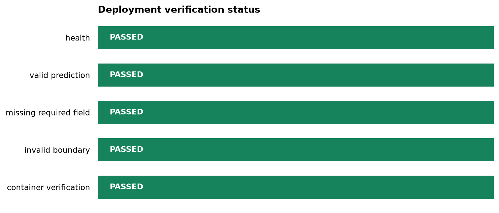

Theme: Rebuild and verify the complete deployment path
Learning objectives
By the end of this chapter, you should be able to:
connect model training, serialization, inference, API serving, validation, testing, containerization, and monitoring;
distinguish build-time checks from run-time checks;
execute the deployment workflow with one reproducible command;
preserve verification results as machine-readable evidence; and
decide whether a candidate is ready for release.
The case study
The earlier chapters developed the deployment system one layer at a time. This chapter treats those layers as one release candidate. The objective is not to build a second application. It is to verify that the same fitted pipeline can move from a saved artifact to a tested service without changing its preprocessing or prediction logic.
The complete path is:
Code
flowchart TD A[Training data] --> B[Fit preprocessing and model] B --> C[Serialized pipeline] C --> D[Inference function] D --> E[FastAPI service] E --> F[API and contract tests] F --> G[Container image] G --> H[Health and prediction probes] H --> I[Monitoring evidence]
flowchart TD
A[Training data] --> B[Fit preprocessing and model]
B --> C[Serialized pipeline]
C --> D[Inference function]
D --> E[FastAPI service]
E --> F[API and contract tests]
F --> G[Container image]
G --> H[Health and prediction probes]
H --> I[Monitoring evidence]
The serialized pipeline is the boundary between model development and serving. Preprocessing must remain inside that pipeline so that training and inference apply the same transformations.
Release acceptance criteria
A deployment candidate is accepted only when all required checks pass.
Layer
Evidence
Acceptance criterion
Artifact
Saved model pipeline
File exists and loads successfully
Inference
Direct Python prediction
Valid input returns the expected output structure
Application
FastAPI app
Application imports without startup errors
Health
/health
HTTP 200 and a healthy status
Prediction
/predict
Valid request returns HTTP 200
Validation
Invalid requests
Rejected with HTTP 422
Tests
Automated test suite
All required tests pass
Container
Docker image and container
Image builds and probes pass
Operations
Structured report
Results are written for review and monitoring
The gate is intentionally strict: one failed required check means the candidate is not ready. A successful health response alone does not prove that the model can make predictions.
Preserve one prediction contract
The valid request used in Chapter 06 should remain the canonical smoke-test request. Store it in data/reference/valid-prediction-request.json so that local tests, container tests, and operational probes use the same input.
Replace the illustrative fields above with the fields defined by the application’s Pydantic request model. Do not maintain slightly different payloads in several scripts; contract drift is easier to prevent when there is one reference file.
Run the complete workflow
The Bash orchestrator runs the repository’s established chapter scripts in release order. From the repository root, run:
bash scripts/bash/09-run-end-to-end-deployment.sh
By default, the workflow performs local checks. Add --with-container when Docker is available and the release candidate must also be verified in a container:
The orchestrator uses existing scripts when they are present rather than duplicating their logic. This preserves the chapter progression:
verify or create the serialized model;
run the automated Python tests;
start the API and wait for readiness;
execute the Chapter 06 API contract tests;
optionally build and test the container; and
summarize the evidence in a report and figure.
If a required command fails, the script exits immediately. This behaviour makes the workflow suitable for a local release gate and, later, for continuous integration.
Generate the verification report
After the checks finish, the reporting script converts their evidence into a consistent JSON summary and a readiness figure:
The script records each check as passed, failed, skipped, or not_run. Skipped optional container checks remain visible and are not silently reported as successes.
When the generated figure exists, include it in the rendered guide:

Figure 11.1: Deployment verification status by check. Green indicates a passed check; red indicates failure; grey indicates a skipped or unavailable check.
The figure is a communication aid, while the JSON file is the auditable source. Automated systems should consume the JSON rather than infer status from image colours.
Inspect failures by layer
An end-to-end failure becomes easier to diagnose when it is assigned to the layer that first failed.
Symptom
Likely layer
First inspection
Model file is missing
Build/artifact
Training and serialization command
Model loads locally but API import fails
Application
Import path, lifespan code, and configuration
Health passes but prediction fails
Contract or inference
Request fields, types, feature order, and model input
Local API passes but container fails
Packaging
Docker build context, copied files, paths, and port
Valid input returns 422
Contract
Reference JSON compared with the Pydantic schema
Invalid input returns 200
Validation
Field constraints and request model
Container works but later probes fail
Operations
Logs, resource limits, dependency health, and model availability
Always inspect the earliest failing layer. Later failures are often consequences rather than independent defects.
Separate build-time and run-time verification
Build-time checks answer whether the release candidate was assembled correctly. Run-time checks answer whether the deployed process remains available and useful.
Build-time checks
dependencies install in the project environment;
tests pass;
the model artifact loads;
the application imports;
the container image builds; and
the reference request satisfies the API contract.
Run-time checks
the process remains alive;
the health endpoint responds;
predictions succeed within an acceptable latency;
validation failures are visible but do not crash the service;
error rates and latency remain within operational thresholds; and
input or prediction distributions are reviewed for meaningful change.
The Chapter 09 report is release evidence, not a replacement for continuing monitoring after deployment.
Reproducibility checklist
Before declaring the case study complete, confirm that:
What this case study demonstrates
Deployment is not the act of placing a model behind an endpoint. It is a chain of contracts: data to pipeline, pipeline to inference function, inference function to API, API to container, and running service to operational evidence. The release is dependable only when those contracts are tested together.
The workflow in this chapter provides a reproducible minimum release gate. It can later be transferred to continuous integration, a container registry, and a managed deployment platform without changing the underlying principles.
Chapter summary
This chapter rebuilt the full deployment path as one verified release candidate. The Bash orchestrator reuses the earlier chapter scripts, while the Python reporter turns test evidence into JSON and a readiness figure. Required failures block release; optional checks are recorded explicitly; and operational monitoring continues after the release gate has passed.